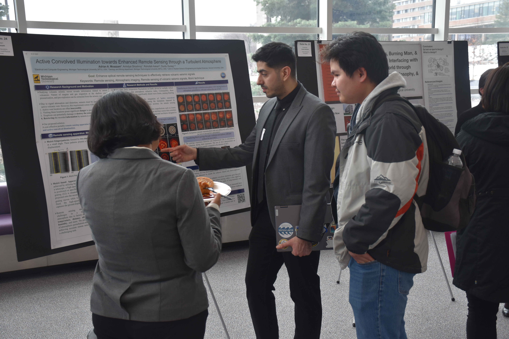

Professional journey across optics, imaging, and learning systems.
A concise overview of my education, research, teaching, and technical work across
computational imaging, optical systems, scientific programming, and remote sensing.

Snapshot
A technical path built around seeing through distortion.
I earned my Ph.D. in Electrical Engineering from Michigan Technological University,
where my work blended optics, machine learning, and image processing to address
degraded imaging conditions. My research centers on optical compensation, turbulence
mitigation, Moire-based sensing, and computational pipelines for remote sensing and
visual measurement.
Education
Academic training.
Doctor of Philosophy, Electrical Engineering
Michigan Technological University, MI, US
Dissertation: Enhanced Moire Technique for Remote Sensing of Ground Motion
Integrating Active Convolved Illumination and Deep Learning.
Advisors: Dr. Durdu Guney and Dr. Radwin Askari.
Master of Science, Electrical and Computer Engineering
Michigan Technological University, MI, US
Relevant research: Electro-optics Antenna and PCB Fabrication.
Bachelor of Science, Electrical Engineering
Shiraz University of Technology, Shiraz, Fars, Iran
Thesis: FPGA LAN Connection to Personal Computer by Wiznet W5300 Interface.
Advisor: Dr. Ebrahim Abiri.
Work experience and internships
Engineering practice and technical training.
Electrical Engineer Intern
HAMPA Energy Engineering & Design Company (HEDCO), Shiraz, Fars, Iran
Project: designed and evaluated control systems in gas and oil plants.
Analyzed and evaluated equipment performance in terms of capability and safety.
Electrical Engineer Intern
Zarin Saba, Shiraz, Fars, Iran
Project: assembly of electrical control panels for industrial plants.
Designed power control panels for industrial plants.
Selected and installed the required components on the control panels.
Electrical Engineering Technician
Goushichi Mobile Devices Repairs Hub and Workshop, Shiraz, Fars, Iran
Served six months as an intern, six months as a teaching assistant, and over a year
and a half as a teacher.
Project: advanced mobile device repair and technical training.
Diagnosed, repaired, and optimized the performance of over 100 mobile devices
monthly while maintaining high-quality service and customer satisfaction.
Conducted training programs and mentored more than 10 students in advanced mobile
repair techniques and diagnostic methodologies.
Teaching experience
Instruction across ten distinct subjects.
Instructor and lab instructor experience with more than 300 students.
Instructor for Signals and Systems
Department of Electrical and Computer Engineering, MTU.
Teaching Assistant for Electronics
Department of Electrical and Computer Engineering, MTU, Dr. Pinar.
Teaching Assistant for Laser Systems and Applications
Department of Electrical and Computer Engineering, MTU, Dr. Guney.
Teaching Assistant for Electronics
Department of Electrical and Computer Engineering, MTU, Dr. Bergstrom.
Teaching Assistant for Circuit 2
Department of Electrical and Computer Engineering, MTU, Dr. Ten.
Instructor for Machine Learning
Summer Youth Program, MTU, Dr. Pinar.
Teaching Assistant for Linear Control Systems
Department of Electrical and Computer Engineering, MTU, Dr. Burl.
Teaching Assistant for Non-linear Control Systems
Department of Electrical and Computer Engineering, MTU, Dr. Burl.
PCB Manufacturing and Fabrication Lab Contributor
Department of Electrical and Computer Engineering, MTU, Dr. Middlebrook.
Contributed to collaborative lab establishment and co-authored standard operating
procedures for printed circuit board manufacturing and fabrication.
Teaching Assistant for Digital Logic
Department of Electrical and Computer Engineering, MTU, Dr. Oberloier.
Teaching Assistant for Electronics
Department of Electrical and Computer Engineering, MTU, Dr. Majdara.
Lab Assistant for Electronics
Department of Electrical and Computer Engineering, MTU, Dr. Pinar.
Instructor for Mobile Device Repair Workshops
Montazeran Mobile Repairing Hub, Shiraz, Iran.
Mentoring at Summer School Program
Department of Electrical Engineering, Sutech.
Research experience
Research roles in optics, imaging, and electronics.
Research Assistant
Department of Electrical and Computer Engineering, MTU
Advisors: Dr. Guney and Dr. Askari.
Served as a lead researcher in the Guney and Askari Research Group, focusing on
advanced projects at the intersection of optics, image processing, and machine
learning.
Designed and implemented Active Convolved Illumination for seismic signal sensing
with displacement measurement precision within hundreds of micrometers over a 1 km
range.
Designed and implemented neural networks to enhance image quality, mitigating
atmospheric distortions and improving normalized cross-correlation by approximately
21%.
Developed and validated an experimental Moire apparatus for high-precision remote
monitoring of seismic activity.
Research Assistant
Department of Electrical and Computer Engineering, MTU, Dr. Middlebrook.
Lead researcher in Middlebrook Lab, focusing on PCB fabrication lab development and
electro-optics antenna research.
Research Assistant
Department of Electrical Engineering, Sutech, Dr. Abiri.
Focused on FPGA board programming and electronic circuit design and optimization.
Publications
Selected publications.
Active Convolved Illumination with Deep Transfer Learning for Complex Beam Transmission through Atmospheric Turbulence
Adrian A. Moazzam, Anindya Ghoshroy, Breeanne Heusdens, Durdu Guney,
Roohollah Askari, Journal of Electronic Imaging 35(3), 033005, 2026.
Remote Sensing of Dynamic Ground Motion via a Moire-Based Apparatus
Adrian A. Moazzam, Nantawat Srisapan, Gregory P. Waite, Durdu Guney,
Roohollah Askari, Remote Sensing 18.5, 718, 2026.
Remote Sensing of Seismic Signals via Enhanced Moire-Based Apparatus Integrated with Active Convolved Illumination
Adrian A. Moazzam, Anindya Ghoshroy, Durdu Guney, Roohollah Askari,
Remote Sensing 17.12, 2032, 2025.
Enhancing Complex Light Beam Propagation in Turbulent Atmosphere with Active Convolved Illumination
Anindya Ghoshroy, James Davis, Adrian A. Moazzam, Roohollah Askari, Durdu
Guney, ACS Photonics 11.11, 4541-4558, 2024.
A common method for simulating turbulent atmosphere for optical imaging
Adrian A. Moazzam, Durdu Guney, 2026. Under submission.
Session Coordinator at AGU 2023 Conference, Seismology General Contribution session, San Francisco, CA, December 2023.
Treasurer, Member of Executive Board, Graduate Students Government (GSG), MTU, 2023-2024.
Chair of Ways and Means Committee, GSG, MTU, 2023-2024.
Board Member of Cultural Event Funds, MTU, 2023-2024.
ECE Department Representative, GSG, MTU, 2022-2023 and 2020-2021.
Executive Board Member, Iranian Community at Michigan Tech, MTU, 2019-2022.
Vice President and Head of Technical Committee, IPC & Electronics Students Chapter, MTU, 2019-2021.
Awards
Recognition and honors
Dean's Finishing Fellowship Award, MTU, 2024.
National Science Foundation scholarship award, Development of Remote Sensing of Seismological Signals via Enhanced Moire Technique, September 2022 - August 2024.
Graduate Research Colloquium Poster Presentation, MTU, 2024.
Presentations and invited technical communication.
Conferences
Adrian A. Moazzam, A. Ghoshroy, R. Askari, D. O. Guney, Active Convolved Illumination towards Enhanced Remote Sensing through a Turbulent Atmosphere, Graduate Research Colloquium, Michigan Technological University, 2024.
Adrian A. Moazzam, A. Ghoshroy, R. Askari, D. O. Guney, Remote Sensing through a Turbulent Atmosphere Enhanced by Active Convolved Illumination, AGU 2023, San Francisco, CA, 11-15 December 2023.
Adrian A. Moazzam, R. Askari, D. O. Guney, Remote Sensing of Seismological Signals via the Moire Technique Enhanced by ACI, 3 Minutes Thesis, Michigan Technological University, 2022.
Adrian A. Moazzam, Emerging Models in Robotics: Innovations and Future Directions, Robotics Conference, Shiraz University of Technology, 2014.
Talks & presentations
Adrian A. Moazzam, A New Design of a Metamaterials-based Patch Antenna, Michigan Technological University, 2020.
Adrian A. Moazzam, Analyzing Optical System for Edge Detection Using 4F System, Michigan Technological University, 2020.
Adrian A. Moazzam, LASIK: An Optical Revolution in Biomedical Applications, Michigan Technological University, 2019.
Adrian A. Moazzam, A Comprehensive Review of Liquid Crystal Research: Historical Perspectives and Future Directions, Michigan Technological University, 2018.
Adrian A. Moazzam, Exploring Quantum Dot LEDs: Principles, Performance, and Prospects, Pasargad University, Shiraz, Iran, 2017.
Adrian A. Moazzam, A Comparative Review of the Technology Behind Floppy Disks and Hard Disk Drives, Shiraz University of Technology, Shiraz, Iran, 2016.